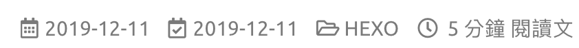

前言
在用主題模板的時候，總有些時候會覺得網頁版面怪怪的、不盡人意的地方，那要怎麼改呢？
這邊列出了我對Icarus主題的改動地方，這篇的東西都是參考下列網址：
https://www.alphalxy.com/2019/03/customize-icarus
https://dp2px.com/2019/06/04/icarus-theme/
https://github.com/ppoffice/hexo-theme-icarus/issues/379
然後我這邊不是全部採用，而是選取部分內容時做到我的網站上，不過話說前頭，本人不是專業的前端工程師，所以大部分內容都只是參考一下就直接照抄，如果對本文內容不夠滿意的話，建議可以直接去看上面的網址內容。
佈局
Icarus的主題默認上是三欄式網頁佈局，不過這個模式在瀏覽文章的時候總會覺得版面有些太滿，所以這邊我將閱讀文章的佈局改成兩欄式的佈局。
文章佈局-兩欄式佈局
打開includes/helpers/layout.js找到下面紅字那行替換成綠字那行，記得不要複製到+號：
1
2
3
4
5
6
7
8
9
10
| const widgets = hexo.extend.helper.get('get_config').bind(this)('widgets');
- return widgets.filter(widget => widget.hasOwnProperty('position') && widget.position === position);
+ if (this.page.layout !== 'post') {
+ return widgets.filter(widget => widget.hasOwnProperty('position') && widget.position === position);
+ }
+ if (position === 'left') {
+ return widgets.filter(widget => widget.hasOwnProperty('position') && (widget.type === 'toc' || widget.type === 'profile'));
+ } else {
+ return []
+ }
|
這邊可以注意到page.layout是頁面的類型，當他是'post'時代表當前是文章閱讀的模式，當然你也可以針對其他頁面去做調整，像是index代表首頁、tag代表標籤頁。
詳細的網頁類別可以點這裡查到。
if (position === 'left')這段代表的是小工具載入的位置，你也可以設定成'right'來讓你後續要載入的小工具展是在右邊。
後面的widget.type代表的是要列在上面指定位置的小工具，可以透過||來增加你想展示的小工具。
接下來因為兩籃式佈局跟三欄式佈局整體的寬度不一樣，所以要調整layout/common/widget.ejs這個檔案：
1
2
3
4
5
6
| <% function side_column_class() {
switch (column_count()) {
case 2:
- return 'is-4-tablet is-4-desktop is-4-widescreen';
+ return 'is-4-tablet is-4-desktop is-3-widescreen';
case 3:
|
還有這個檔案layout/layout.ejs：
1
2
3
4
5
6
7
8
9
10
| -<body class="is-<%= column_count() %>-column">
+<body class="is-3-column">
<%- partial('common/navbar', { page }) %>
<% function main_column_class() {
switch (column_count()) {
case 1:
return 'is-12';
case 2:
- return 'is-8-tablet is-8-desktop is-8-widescreen';
+ return 'is-8-tablet is-8-desktop is-9-widescreen';
|
因為Icarus有針對響應式去做設計，所以要更改source/css/style.styl，針對不同螢幕寬度有相應的呈現：
1
2
3
4
5
6
7
8
9
10
11
12
13
| .is-2-column .container
max-width: screen-desktop - 2 * gap
width: screen-desktop - 2 * gap
+ .is-3-column .container
+ max-width: screen-widescreen - gap
+ width: screen-widescreen - gap
@media screen and (min-width: screen-fullhd)
+ .is-3-column .container
+ max-width: screen-fullhd - 2 * gap
+ width: screen-fullhd - 2 * gap
.is-2-column .container
max-width: screen-widescreen - 2 * gap
width: screen-widescreen - 2 * gap
|
標題佈局-更新時間和icon
接下來新增文章標題的更新時間和標籤icon，更改layout/common/article.ejs：
1
2
3
4
5
6
7
8
9
| <% if (post.layout != 'page') { %>
<div class="level article-meta is-size-7 is-uppercase is-mobile is-overflow-x-auto">
<div class="level-left">
- <time class="level-item has-text-grey" datetime="<%= date_xml(post.date) %>"><%= date(post.date) %></time>
+ <time class="level-item has-text-grey" datetime="<%= date_xml(post.date) %>"><i class="far fa-calendar-alt"> </i><%= date(post.date) %></time>
+ <% if (post.updated && post.updated > post.date) { %>
+ <time class="level-item has-text-grey is-hidden-mobile" datetime="<%= date_xml(post.updated) %>"><i class="far fa-calendar-check"> </i><%= date(post.updated) %></time>
+ <% } %>
<% if (post.categories && post.categories.length) { %>
|
然後要刪除source/js/main.js中的部分程式碼：
1
2
3
4
5
| - if (typeof(moment) === 'function') {
- $('.article-meta time').each(function () {
- $(this).text(moment($(this).attr('datetime')).fromNow());
- });
- }
|
我這邊遇到了一個問題：在source/js/main.js找不到上面那段刪除，這邊猜測是要執行hexo g之後才會產生上面那段程式碼，如果找不到要刪除的程式碼，記得要去generate一次你的網站。
完成的模樣會像是這樣的狀況：

文章結尾佈局-修改tag展示
這邊在文章底部增加了一個hr，然後針對文章的預覽還有結尾加上了tag的icon，修改layout/common/article.ejs這個檔案：
1
2
3
4
5
6
7
8
9
10
11
12
13
14
15
16
17
18
19
20
21
22
23
24
25
26
27
28
29
30
31
32
33
34
35
36
| <% if (!index && post.tags && post.tags.length) { %>
+ <hr style="height:1px;margin:1rem 0"/>
<div class="level is-size-7 is-uppercase">
<div class="level-start">
<div class="level-item">
- <span class="is-size-6 has-text-grey has-mr-7">#</span>
+ <i class="fas fa-tags has-text-grey"></i>
<%- list_tags(post.tags, {
class: 'has-link-grey ',
show_count: false,
- style: 'link'
+ style: 'link',
+ separator: ', '
}) %>
</div>
</div>
</div>
<% } %>
<% if (index && post.excerpt) { %>
- <div class="level is-mobile">
+ <hr style="height:1px;margin:1rem 0"/>
+ <div class="level is-mobile is-flex">
+ <div class="level-start">
+ <% if (post.tags && post.tags.length) { %>
+ <div class="level-item is-size-7 is-uppercase">
+ <i class="fas fa-tags has-text-grey"></i>
+ <%- list_tags(post.tags, {
+ class: 'has-link-grey ',
+ show_count: false,
+ style: 'link',
+ separator: ', '
+ }) %>
+ </div>
+ <% } %>
+ </div>
<div class="level-start">
|
手機顯示優化
在使用手機瀏覽網站的時候，隱藏archive和tagcloud小工具，修改layout/widget/archive.ejs：
1
2
| -<div class="card widget">
+<div class="card widget is-hidden-mobile">
|
layout/widget/tagcloud.ejs：
1
2
| -<div class="card widget">
+<div class="card widget is-hidden-mobile">
|
當然，你可以在layout/widget/裡面找你想要隱藏的小工具，一樣套用上面的方式。
固定目錄
將文章的目錄固定在一個位置，不會隨著網頁的滾動而看不到目錄，這邊只需簡單的修改layout/widget/toc.ejs就可以了：
1
2
| -<div class="card widget" id="toc">
+<div class="card widget column-left is-sticky" id="toc">
|
功能
接下來針對網頁的功能去做新增跟修正。
版權宣告
在layout/common/article.ejs新增：
1
2
3
4
5
6
7
8
9
10
11
12
13
14
| <div class="content">
<%- index && post.excerpt ? post.excerpt : post.content %>
</div>
+ <% if (!index && post.layout === 'post' && post.copyright !== false) { %>
+ <ul class="post-copyright">
+ <li><strong>文章標題：</strong><a href="<%= post.permalink %>"><%= page.title %></a></li>
+ <li><strong>文章作者：</strong><a href="<%= theme.url %>"><%= theme.author %></a></li>
+ <li><strong>文章連結：</strong><a href="<%= post.permalink %>"><%= post.permalink %></a></li>
+ <li><strong>發佈時間：</strong><%= post.date.format("YYYY-MM-DD") %></li>
+ <li><strong>版權聲明：</strong>本博客所有文章除特別聲明外，均採用 <a href="https://creativecommons.org/licenses/by-nc-sa/4.0/deed.zh" rel="external nofollow" target="_blank">CC BY-NC-SA 4.0</a> 許可協議。引用請註明出處！
+ </li>
+ </ul>
+ <% } %>
<% if (!index && post.tags && post.tags.length) { %>
|
然後增加css樣式，在source/css/style.styl新增：
1
2
3
4
5
6
7
8
9
10
11
| /* ---------------------------------
* Copyright
* --------------------------------- */
+.post-copyright
+ font-size: 1rem
+ letter-spacing: 0.02rem
+ word-break: break-all
+ margin: 2.5rem 0 0
+ padding: 1rem 1rem
+ border-left: 3px solid #FF1700
+ background-color: #F9F9F9
|
默認使用目錄小工具
正常在寫文章的時候，要啟用目錄的功能時，需要在meta資料中加入toc: true來開啟目錄小工具，不過大多數時候都會在文章中使用目錄，所以這邊讓他在默認的時候加入toc: true，修改includes/helpers/config.js：
1
2
3
4
5
6
7
| return defaultValue;
} else {
const property = readProperty(specs, configName);
- return property === null ? null : property[descriptors.defaultValue];
+ const result = property === null ? null : property[descriptors.defaultValue];
+ return (configName === 'toc' && this.page.layout === 'post' && result === null) ? true : result;
}
|
在版權的地方有寫到採用CC BY-NC-SA 4.0，而CC BY-NC-SA 4.0的icon是四個一組，所以要讓在配置link.icon可以是一個數組的方式呈現。
修改layout/common/footer.ejs：
1
2
3
4
| <% } else { %>
- <i class="<%= link.icon %>"></i>
+ <% for (let icon of (Array.isArray(link.icon) ? link.icon : [link.icon])) { %><i class="<%= icon %>"></i> <% } %>
<% } %>
|
和includes/specs/icon_link.spec.js：
1
2
3
4
5
| icon: {
[required]: true,
- [type]: 'string',
+ [type]: ['string', 'array'],
[doc]: 'Link icon class names'
|
另外在_config.yml中修改成這樣：
1
2
3
4
5
6
7
8
9
| footer:
links:
CC BY-NC-SA 4.0:
icon:
- fab fa-creative-commons
- fab fa-creative-commons-by
- fab fa-creative-commons-nc
- fab fa-creative-commons-sa
url: 'https://creativecommons.org/licenses/by-nc-sa/4.0/'
|
樣式
按鈕、背景顏色增加漸變
讓一些按鈕(例如profile中的文章、分類等)有陰影、漸變的效果，修改source/css/style.styl：
1
2
3
4
5
6
| .menu-list li ul
margin-right: 0
+ .menu-list a
+ transition: background-color 0.3s ease-in-out
.menu-list a.level
display: flex
|
區塊增加浮動效果
:hover時曾大陰影面積，增加動畫屬性ease-in-out，修改source/css/style.styl：
1
2
3
4
5
| .card
border-radius: 4px
box-shadow: 0 4px 10px rgba(0,0,0,0.05), 0 0 1px rgba(0,0,0,0.1)
+ &:hover
+ box-shadow: 0 6px 15px rgba(0,0,0,0.15), 0 0 1px rgba(0,0,0,0.1)
|
還有source/js/animation.js：
1
2
3
| element.style.transform = '';
- element.style.transition = 'opacity 0.3s ease-out, transform 0.3s ease-out';
+ element.style.transition = 'opacity 0.3s ease-out, transform 0.3s ease-out, box-shadow 0.3s ease-in-out';
|
這樣修改能看到在滑鼠移到各個區塊的時候會有淡淡的陰影，可以更改上面數值讓他變得明顯或是淡化它。
結語
這篇是參考alphalxy這個網站上面的設置(並不是全都採用)，我在最上面也有留這個網站的連結，實作完之後版面的規劃跟細節，讓觀看的舒適度大大的增加也讓我比較順眼了。
如果你有找到更好的設置，歡迎留言給我，之後如果有其他有趣的功能會在實作後分享上來～